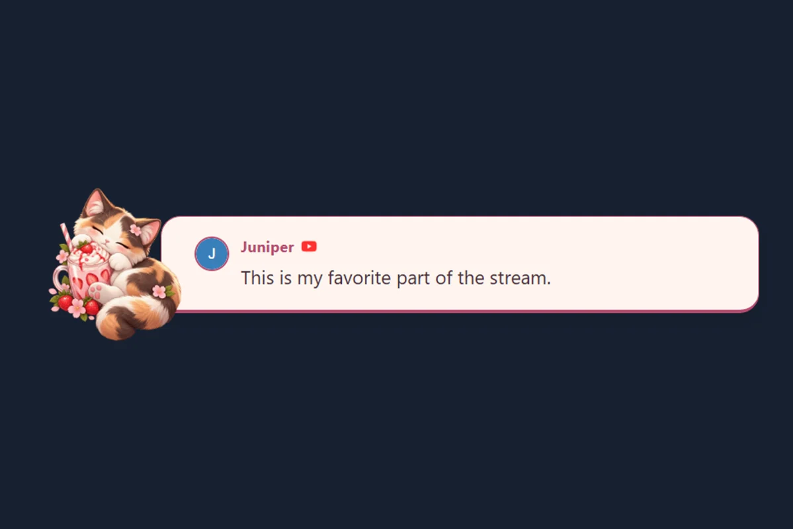
🐱 قطة الفراولة
قطة ثلاثية الألوان ناعسة وحليب فراولة وأدوات مكتبية وردية. يتضمن أنماطًا متناسقة للدردشة والرسالة المميزة والتنبيهات.
معاينة الحزمة واستخدامهاتصفح معرض التراكبات المرئي الكامل، أو استكشف القوالب المخصصة والاستيراد أدناه.
موجز متتابع من المنصات المتصلة. ابدأ بقالب دردشة أو لوحة الإرساء.
رسالة واحدة تختارها في لوحة الإرساء. اختر تصميم رسائل مميزة للمقابلات أو الأسئلة والأجوبة أو التحيات.
احتفل بالمتابعات والعضويات والتبرعات. هيّئ الحركات والصوت في إعدادات تنبيهات SSN. دليل التنبيهات
اعثر على القالب المثالي لبثك
مظهر واحد عبر ثلاثة مصادر متصفح. في المعرض، اختر استخدام مجموعة متناسقة، وأدخل تفاصيل جلستك، ثم انسخ الروابط إلى OBS. الحركة اختيارية.

قطة ثلاثية الألوان ناعسة وحليب فراولة وأدوات مكتبية وردية. يتضمن أنماطًا متناسقة للدردشة والرسالة المميزة والتنبيهات.
معاينة الحزمة واستخدامها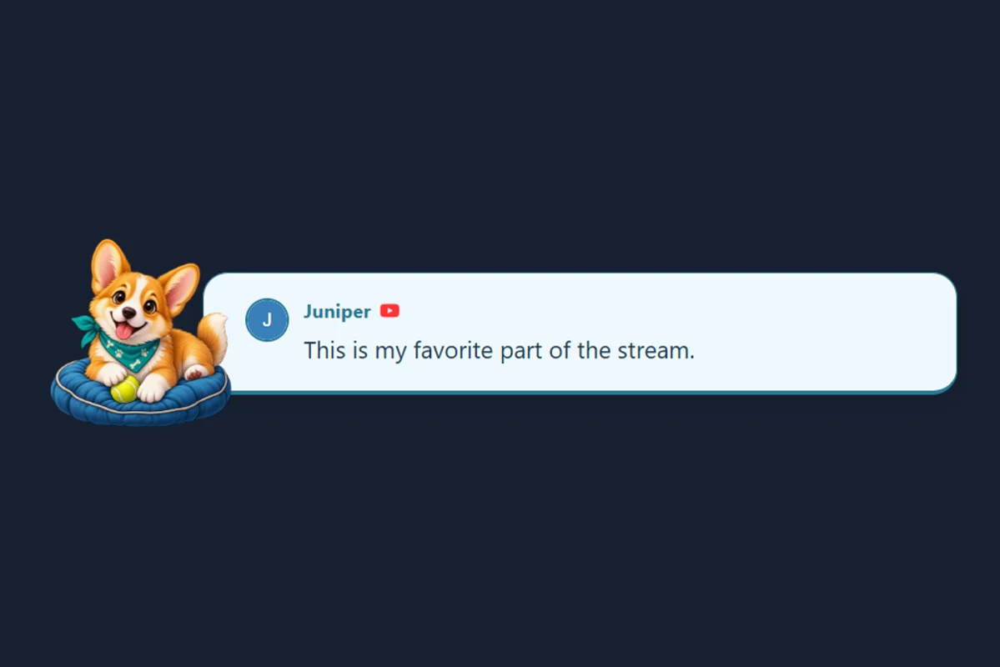
كلب كورغي مرح على بطاقة بريدية زرقاء سماوية. يتضمن أنماطًا متناسقة للدردشة والرسالة المميزة والتنبيهات.
معاينة الحزمة واستخدامها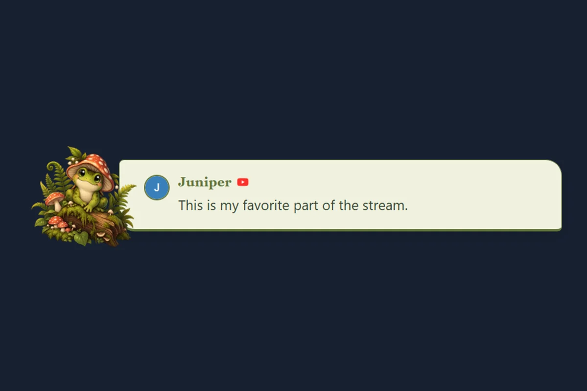
ضفدع من القصص المصورة في غابة هادئة. يتضمن أنماطًا متناسقة للدردشة والرسالة المميزة والتنبيهات.
معاينة الحزمة واستخدامها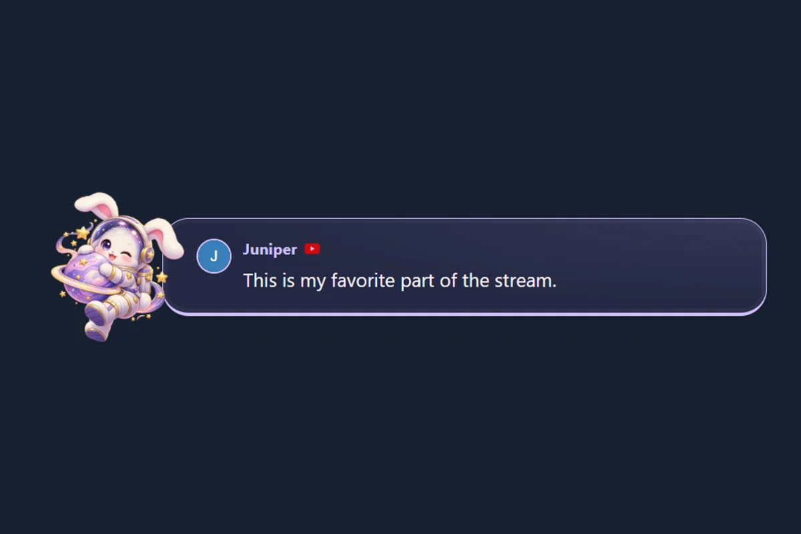
أرنب رائد فضاء يطفو بين غبار نجمي أرجواني فاتح. يتضمن أنماطًا متناسقة للدردشة والرسالة المميزة والتنبيهات.
معاينة الحزمة واستخدامها
تنين صغير مع بلورة مسحورة مضيئة. يتضمن أنماطًا متناسقة للدردشة والرسالة المميزة والتنبيهات.
معاينة الحزمة واستخدامها
راكون بسماعات رأس وأسطوانة فينيل بألوان النعناع والبرقوق. يتضمن أنماطًا متناسقة للدردشة والرسالة المميزة والتنبيهات.
معاينة الحزمة واستخدامها
شبح ودود ويقطينة متوهجة ولون برقوقي ليلي. يتضمن أنماطًا متناسقة للدردشة والرسالة المميزة والتنبيهات.
معاينة الحزمة واستخدامها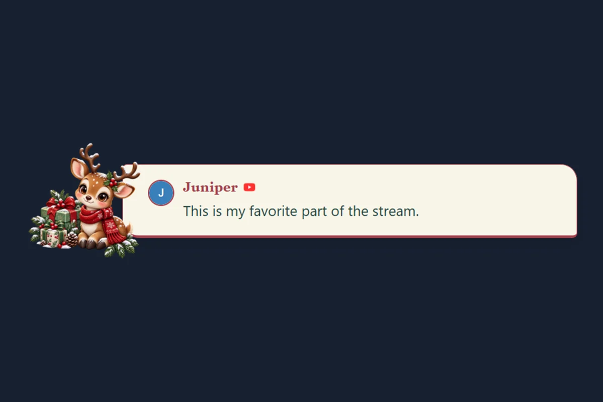
رنّة يلتف بوشاح وخضرة احتفالية. يتضمن أنماطًا متناسقة للدردشة والرسالة المميزة والتنبيهات.
معاينة الحزمة واستخدامهاحزم كاملة ذات طابع خاص مع توثيق وصور نموذجية وأدلة
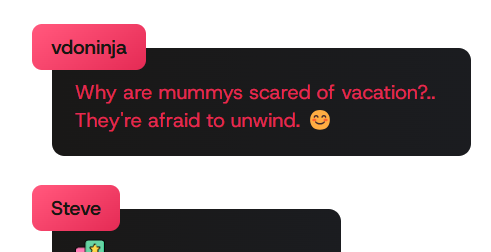
مظهر متقن ومتحرك بالكامل بألوان قابلة للتخصيص وانتقالات سلسة. مثالي لبث الألعاب.

تراكب دردشة بأسلوب Windows 3.1 يبعث الحنين، مع تصميم نوافذ كلاسيكي وتفاصيل دقيقة بالبكسل.
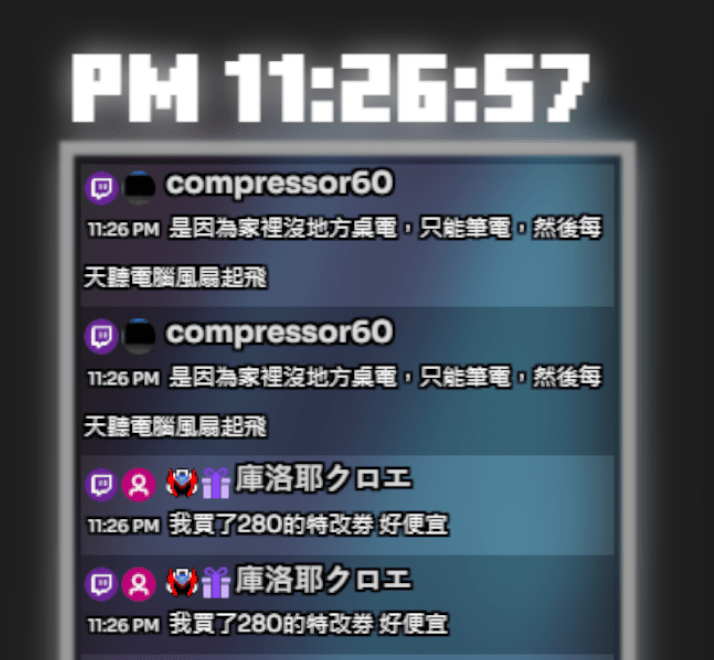
تصميم مرتب وحديث بحركات سلسة ووضوح قراءة ممتاز. مجموعات ألوان قابلة للتخصيص.
قوالب جاهزة للاستخدام لا تتطلب سوى معرّف جلستك
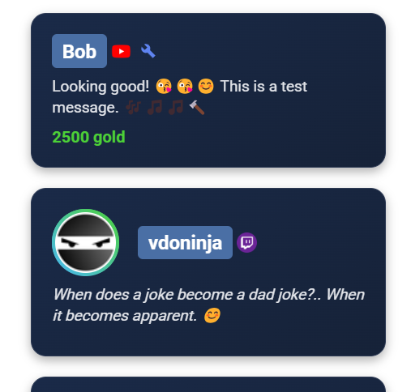
قالب مرتب وخفيف بالميزات الأساسية. نقطة بداية مثالية للتخصيص.
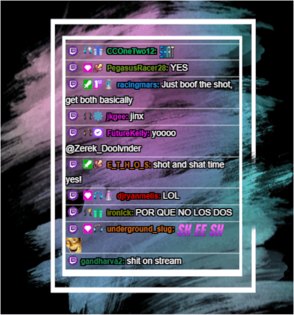
تصميم أنيق بحركات سلسة ومؤثرات مرئية. يجذب النظر دون تشتيت.
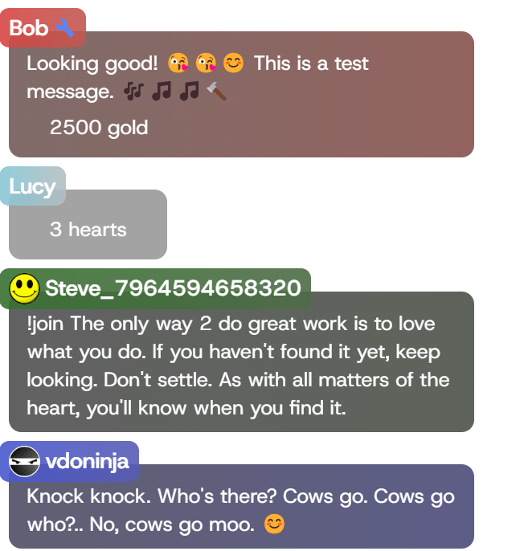
مظهر جريء عالي التباين مصمم لبث الألعاب، مع وضوح ممتاز حتى في المحتوى السريع.
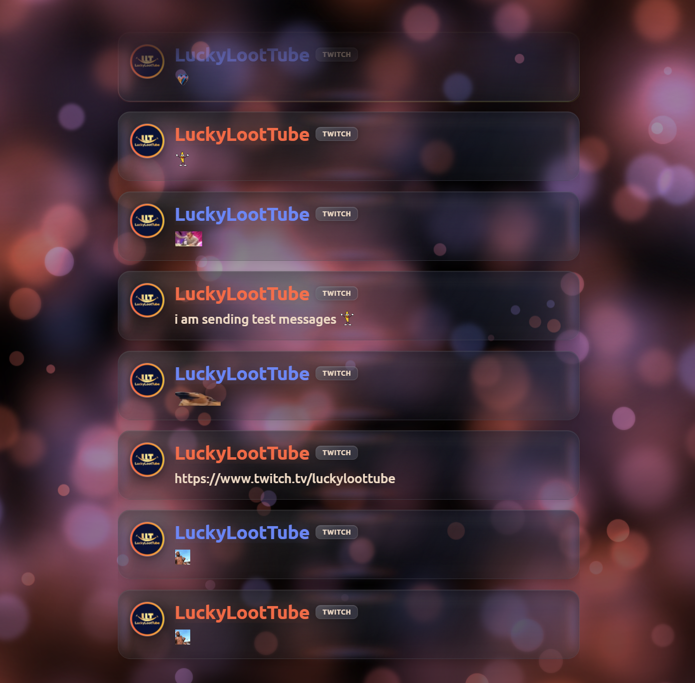
تراكب دردشة أنيق ومتحرك بأسلوب الزجاج السائل مع حركات سلسة وعرض جذاب للرموز التعبيرية.
قوالب تعمل مع أنماط CSS الخاصة بـYouTube
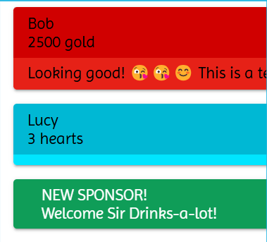
استخدم CSS المصمم لـYouTube مع صفحة تراكبنا ذات بنية YouTube. متوافق مع أنماط Septapus.
نقاط بداية لإنشاء تراكباتك المخصصة
الحد الأدنى من الشفرة اللازمة لإنشاء تراكبك من الصفر. مثالي للمطورين والبرمجة بمساعدة LLM.
نقطة بداية أشمل تتضمن تعليقات وتوثيقًا لمساعدتك في بناء تراكباتك المخصصة.
أنشأت قالبًا رائعًا لـSocial Stream Ninja؟ شاركه مع المجتمع بإرسال طلب سحب إلى مستودعنا على GitHub.
الإرسال على GitHubجديد على الاستيراد؟ قراءة دليل مظهر الدردشة الكامل للعثور على ملفات الأدوات والتنسيقات المدعومة وإعداد OBS وحل المشكلات.
يعمل هذا مع تطبيق SSN لسطح مكتب Windows وإضافة Chrome — دون الحاجة إلى تعديل الشفرة.
افتح مصادر منصاتك في تطبيق SSN أو الإضافة، ثم أرسل رسالة اختبار. تابع فقط بعد ظهورها في لوحة إرساء SSN.
استخدم ZIP أو المجلد أو الملفات التي يقدمها مصمم الأداة. يتضمن التصدير المفيد عادةً HTML وCSS وJavaScript والحقول والبيانات والأصول. لا تكفي لقطة شاشة أو رابط تراكب StreamElements.
افتح أداة الاستيراد واختر ZIP أو المجلد أو الملفات. تكتشف أجزاء الأداة وتعرض معاينة تجريبية فورًا.
فتح أداة استيراد الأدواتيؤدي فتح أداة الاستيراد من نافذة SSN المنبثقة إلى ملء معرّف الجلسة وكلمة المرور تلقائيًا. إذا فتحتها مباشرة، فانسخهما من خيارات الجلسة (Session Options) في التطبيق أو الإضافة. تدخل معرّف الجلسة مرة واحدة في أداة الاستيراد؛ ويُحفظ داخل الملف المُنزَّل.
إذا وفرت الأداة المستوردة إعدادات متوافقة، فاستخدم سجل الرسائل (Message history) لإيقاف الإزالة المؤقتة أو تغيير عدد الرسائل التي تبقى على الشاشة. يغيّر هذا إعدادات الأداة، لا شفرتها.
معاينة تجريبية (Demo Preview) تفحص التصميم برسائل نموذجية. معاينة مباشرة (Live Preview) تفحص الجلسة باستخدام دردشة حقيقية من تطبيق SSN أو الإضافة قيد التشغيل.
انقر على تنزيل HTML لـOBS (Download OBS HTML). في OBS، أضف مصدر متصفح وفعّل ملف محلي، وحدد ملف HTML المُنزَّل. لا تضف معرّف الجلسة ولا تعدّل الرابط في OBS. أبقِ SSN قيد التشغيل أثناء البث؛ ويمكن إغلاق أداة الاستيراد وStreamElements.
راجع الملفات المكتشفة في أداة الاستيراد واستخدم Advanced file selection إذا اختارت HTML أو CSS أو JavaScript خاطئًا.
تأكد من وصول الدردشة إلى لوحة إرساء SSN ومن تطابق معرّف الجلسة وكلمة المرور الاختيارية تمامًا.
استخدم ملف HTML المُنزَّل — وليس صفحة الاستيراد أو ZIP الأصلي أو رابط StreamElements — ثم حدّث مصدر المتصفح في OBS.
اتبع هذه الخطوات البسيطة للبدء
تصفح مكتبة القوالب واختر ما يناسب أسلوب بثك. استخدم معرض لقطات الشاشة لمقارنة التصاميم؛ تعمل معظم القوالب المدمجة مباشرة عبر رابط دون تنزيل.
استبدل YOURSESSIONID في رابط القالب بمعرّف جلستك الفعلي في Social Stream Ninja الموجود ضمن Session Options في تطبيق SSN أو الإضافة. أدرج كلمة المرور الاختيارية إذا كانت جلستك تستخدمها.
https://socialstream.ninja/themes/pretty.html?session=YOURSESSIONID
أضف الرابط المعدّل كمصدر متصفح في برنامج البث:
خصص تراكبك بـCSS مخصص بإحدى هذه الطرق:
&css=URL_TO_YOUR_CSS_FILE إلى رابط قالبك&b64css=YOUR_BASE64_ENCODED_CSSابدأ بتراكب يعمل، ثم غيّر مظهره.
استخدام مصدر متصفح OBS CSS مخصص للألوان والمسافات والخطوط. احتفظ برابط SSN الأصلي والاتصال.
لديك تصدير أداة دردشة من StreamElements؟ فتح محوّل StreamElements، وعاينه، ثم نزّل HTML لـOBS. استخدم ملف ZIP أو الملفات الأصلية، وليس لقطة شاشة أو رابط تراكب. راجع الإعداد أدناه.
انسخ نموذج بداية يعمل وعدّل HTML وCSS وJavaScript الخاصة به. البدء السريع · دليل المطور · حقول الأحداث
للسلوك القائم على المحفزات، ابدأ بـ محرر Event Flow و قواعد مؤثرات التنبيهات قبل كتابة تراكب جديد.
اختر نقطة بداية وانسخ التوجيه واستبدل تفاصيل التصميم بين الأقواس. أرفق ملفات المصدر إذا لم يستطع مساعد الذكاء الاصطناعي قراءة الروابط. أبقِ معرّف الجلسة الخاص وكلمة المرور خارج المحادثة.
تحوّل أداة أكثر تعقيدًا؟ استخدام توجيه تحويل StreamElements / Streamlabs الكامل.
تعلّم كيفية إنشاء تراكب دردشة مخصص بمساعدة الذكاء الاصطناعي